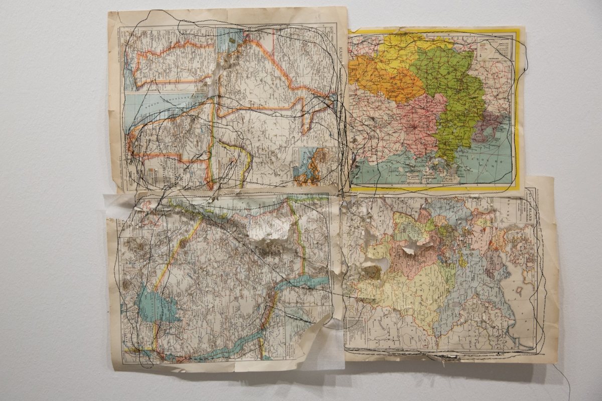

I make music as Theydon Boys and I work with sound design, experimental composition and improvisation.
-
A walk with Anna [2017]
My first full cassette release. Received very positive reviews from Gin and Platonic and Ondrej Zajac.
-
Two Consecutive Songs [2015]
A digital-only self published EP.
-
Scar Mechanics – Map Series [2014]
 photo by Ana Mendes Atonal composition for performance by Ana Mendes. Field recordings of sewing machines / Ableton Live.